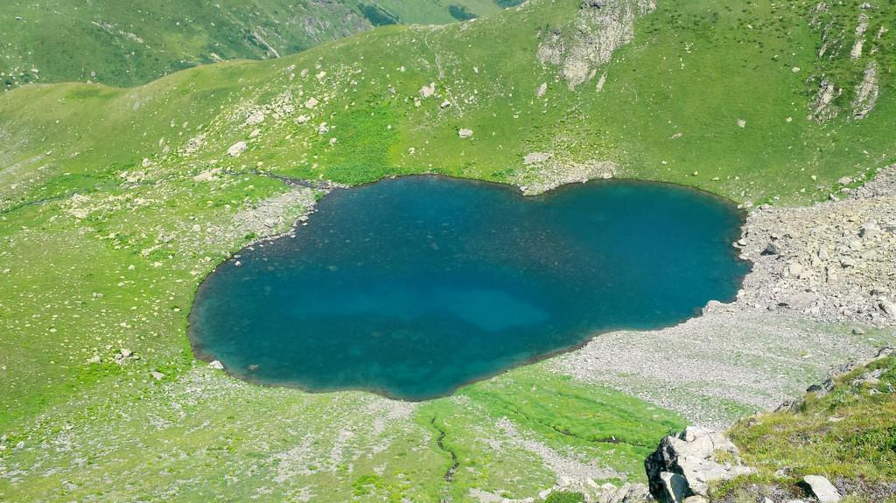

კალალიშ ტობა

- კალალის ტობა მდებარეობს სამეგრელო-ზემო სვანეთში, ჩხოროწყუს მუნიციპალიტეტში
- ზღვის დონიდან 2490 მეტრზე
- კალალიშ ტობა მცირე ზომის ტბაა თუმცა ძალიან ლამაზია
- აქვს გულის ფორმა და არის ყოველთვის ლურჯი
- ტურის დაჯავშნა: ხელმისაწვდომია ვებსაიტით, ელ.ფოსტით ან ტელეფონით